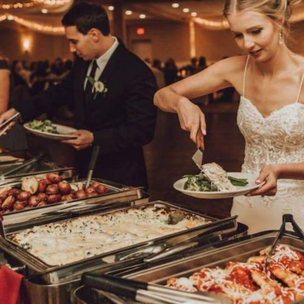

Wedding Food
Show Notes
This week, Penny & Jim are serving up a full plate of wedding food talk! From carving stations and signature cocktails to late-night snack bars and the age-old debate of chicken... beef... or the vegetarian option no one remembered to order.
Is a cash bar a wedding crime? Is there ever too much food? And should your guests really be waiting two hours to eat?
Grab a fork and join us as we investigate the delicious (and occasionally disastrous) world of wedding catering. As always, the advice is judgment-free, the laughs are plentiful, and someone just might end up under Wedding Police House Arrest!
Bon appétit... and remember... The Wedding Police are always watching... and always hungry!!!
🚨 Never Miss a Case
New episodes every week. Follow The Wedding Police so the next one lands in your feed.
Enjoying it? A quick rating on Apple Podcasts or Spotify helps new couples find the show.